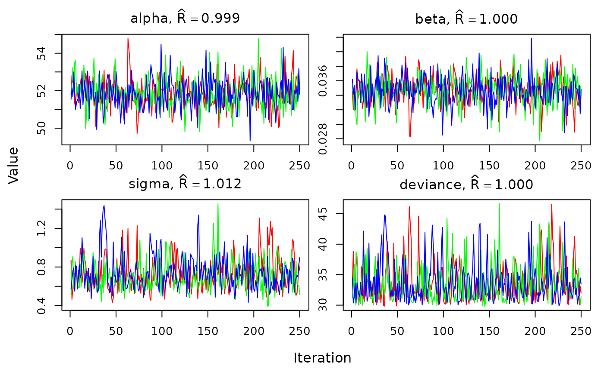
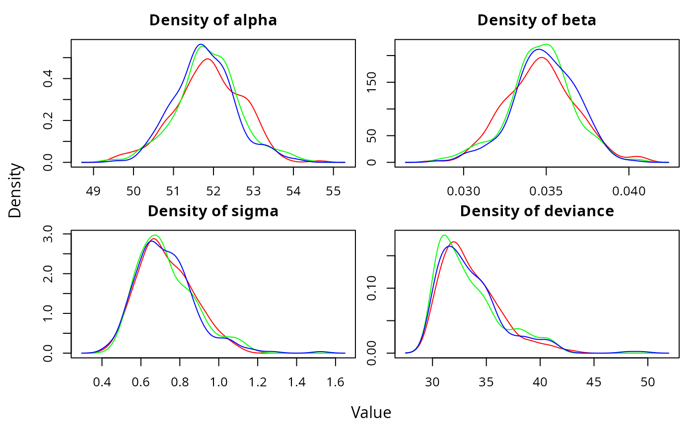
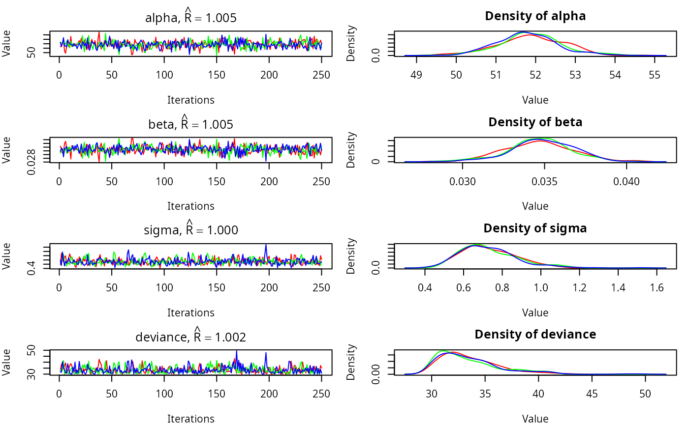
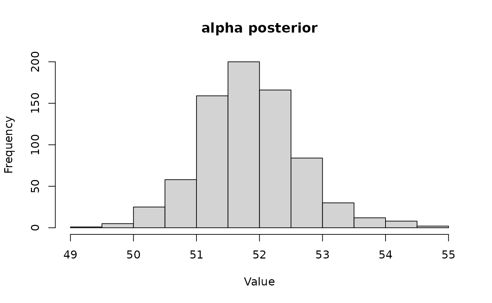

In addition to installing the jagsUI package, we also need to separately install the free JAGS software, which you can download here.
Once that’s installed, load the jagsUI library:
jagsUI Workflow
list
We’ll use the longley dataset to conduct a simple linear regression. The dataset is built into R.
data(longley)
head(longley)
# GNP.deflator GNP Unemployed Armed.Forces Population Year Employed
# 1947 83.0 234.289 235.6 159.0 107.608 1947 60.323
# 1948 88.5 259.426 232.5 145.6 108.632 1948 61.122
# 1949 88.2 258.054 368.2 161.6 109.773 1949 60.171
# 1950 89.5 284.599 335.1 165.0 110.929 1950 61.187
# 1951 96.2 328.975 209.9 309.9 112.075 1951 63.221
# 1952 98.1 346.999 193.2 359.4 113.270 1952 63.639We will model the number of people employed (Employed) as a function of Gross National Product (GNP). Each column of data is saved into a separate element of our data list. Finally, we add a list element for the number of data points n. In general, elements in the data list must be numeric, and structured as arrays, matrices, or scalars.
Next we’ll describe our model in the BUGS language. See the JAGS manual for detailed information on writing models for JAGS. Note that data you reference in the BUGS model must exactly match the names of the list we just created. There are various ways to save the model file, we’ll save it as a temporary file.
# Create a temporary file
modfile <- tempfile()
#Write model to file
writeLines("
model{
# Likelihood
for (i in 1:n){
# Model data
employed[i] ~ dnorm(mu[i], tau)
# Calculate linear predictor
mu[i] <- alpha + beta*gnp[i]
}
# Priors
alpha ~ dnorm(0, 0.00001)
beta ~ dnorm(0, 0.00001)
sigma ~ dunif(0,1000)
tau <- pow(sigma,-2)
}
", con=modfile)Initial values can be specified as a list of lists, with one list element per MCMC chain. Each list element should itself be a named list corresponding to the values we want each parameter initialized at. We don’t necessarily need to explicitly initialize every parameter. We can also just set inits = NULL to allow JAGS to do the initialization automatically, but this will not work for some complex models. We can also provide a function which generates a list of initial values, which jagsUI will execute for each MCMC chain. This is what we’ll do below.
Next, we choose which parameters from the model file we want to save posterior distributions for. We’ll save the parameters for the intercept (alpha), slope (beta), and residual standard deviation (sigma).
params <- c('alpha','beta','sigma')We’ll run 3 MCMC chains (n.chains = 3).
JAGS will start each chain by running adaptive iterations, which are used to tune and optimize MCMC performance. We will manually specify the number of adaptive iterations (n.adapt = 100). You can also try n.adapt = NULL, which will keep running adaptation iterations until JAGS reports adaptation is sufficient. In general you do not want to skip adaptation.
Next we need to specify how many regular iterations to run in each chain in total. We’ll set this to 1000 (n.iter = 1000). We’ll specify the number of burn-in iterations at 500 (n.burnin = 500). Burn-in iterations are discarded, so here we’ll end up with 500 iterations per chain (1000 total - 500 burn-in). We can also set the thinning rate: with n.thin = 2 we’ll keep only every 2nd iteration. Thus in total we will have 250 iterations saved per chain ((1000 - 500) / 2).
The optimal MCMC settings will depend on your specific dataset and model.
We’re finally ready to run JAGS, via the jags function. We provide our data to the data argument, initial values function to inits, our vector of saved parameters to parameters.to.save, and our model file path to model.file. After that we specify the MCMC settings described above.
out <- jags(data = jags_data,
inits = inits,
parameters.to.save = params,
model.file = modfile,
n.chains = 3,
n.adapt = 100,
n.iter = 1000,
n.burnin = 500,
n.thin = 2)
#
# Processing function input.......
#
# Done.
#
# Compiling model graph
# Resolving undeclared variables
# Allocating nodes
# Graph information:
# Observed stochastic nodes: 16
# Unobserved stochastic nodes: 3
# Total graph size: 74
#
# Initializing model
#
# Adaptive phase, 100 iterations x 3 chains
# If no progress bar appears JAGS has decided not to adapt
#
#
# Burn-in phase, 500 iterations x 3 chains
#
#
# Sampling from joint posterior, 500 iterations x 3 chains
#
#
# Calculating statistics.......
#
# Done.We should see information and progress bars in the console.
If we have a long-running model and a powerful computer, we can tell jagsUI to run each chain on a separate core in parallel by setting argument parallel = TRUE:
out <- jags(data = jags_data,
inits = inits,
parameters.to.save = params,
model.file = modfile,
n.chains = 3,
n.adapt = 100,
n.iter = 1000,
n.burnin = 500,
n.thin = 2,
parallel = TRUE)While this is usually faster, we won’t be able to see progress bars when JAGS runs in parallel.
Our first step is to look at the output object out:
out
# JAGS output for model '/tmp/Rtmp6BlD4k/fileff0b5ec59764', generated by jagsUI.
# Estimates based on 3 chains of 1000 iterations,
# adaptation = 100 iterations (sufficient),
# burn-in = 500 iterations and thin rate = 2,
# yielding 750 total samples from the joint posterior.
# MCMC ran for 0.001 minutes at time 2024-09-13 14:59:26.759251.
#
# mean sd 2.5% 50% 97.5% overlap0 f Rhat n.eff
# alpha 51.854 0.792 50.292 51.812 53.544 FALSE 1 0.999 750
# beta 0.035 0.002 0.030 0.035 0.038 FALSE 1 1.000 750
# sigma 0.730 0.166 0.485 0.704 1.127 FALSE 1 1.012 202
# deviance 33.665 3.145 30.044 32.814 42.193 FALSE 1 1.000 750
#
# Successful convergence based on Rhat values (all < 1.1).
# Rhat is the potential scale reduction factor (at convergence, Rhat=1).
# For each parameter, n.eff is a crude measure of effective sample size.
#
# overlap0 checks if 0 falls in the parameter's 95% credible interval.
# f is the proportion of the posterior with the same sign as the mean;
# i.e., our confidence that the parameter is positive or negative.
#
# DIC info: (pD = var(deviance)/2)
# pD = 5 and DIC = 38.619
# DIC is an estimate of expected predictive error (lower is better).We first get some information about the MCMC run. Next we see a table of summary statistics for each saved parameter, including the mean, median, and 95% credible intervals. The overlap0 column indicates if the 95% credible interval overlaps 0, and the f column is the proportion of posterior samples with the same sign as the mean.
The out object is a list with many components:
names(out)
# [1] "sims.list" "mean" "sd" "q2.5" "q25"
# [6] "q50" "q75" "q97.5" "overlap0" "f"
# [11] "Rhat" "n.eff" "pD" "DIC" "summary"
# [16] "samples" "modfile" "model" "parameters" "mcmc.info"
# [21] "run.date" "parallel" "bugs.format" "calc.DIC"We’ll describe some of these below.
We should pay special attention to the Rhat and n.eff columns in the output summary, which are MCMC diagnostics. The Rhat (Gelman-Rubin diagnostic) values for each parameter should be close to 1 (typically, < 1.1) if the chains have converged for that parameter. The n.eff value is the effective MCMC sample size and should ideally be close to the number of saved iterations across all chains (here 750, 3 chains * 250 samples per chain). In this case, both diagnostics look good.
We can also visually assess convergence using the traceplot function:
traceplot(out)
We should see the lines for each chain overlapping and not trending up or down.
We can quickly visualize the posterior distributions of each parameter using the densityplot function:
densityplot(out)
The traceplots and posteriors can be plotted together using plot:
plot(out)
We can also generate a posterior plot manually. To do this we’ll need to extract the actual posterior samples for a parameter. These are contained in the sims.list element of out.
post_alpha <- out$sims.list$alpha
hist(post_alpha, xlab="Value", main = "alpha posterior")
If we need more iterations or want to save different parameters, we can use update:
# Now save mu also
params <- c(params, "mu")
out2 <- update(out, n.iter=300, parameters.to.save = params)
# Compiling model graph
# Resolving undeclared variables
# Allocating nodes
# Graph information:
# Observed stochastic nodes: 16
# Unobserved stochastic nodes: 3
# Total graph size: 74
#
# Initializing model
#
# Adaptive phase.....
# Adaptive phase complete
#
# No burn-in specified
#
# Sampling from joint posterior, 300 iterations x 3 chains
#
#
# Calculating statistics.......
#
# Done.The mu parameter is now in the output:
out2
# JAGS output for model '/tmp/Rtmp6BlD4k/fileff0b5ec59764', generated by jagsUI.
# Estimates based on 3 chains of 1300 iterations,
# adaptation = 100 iterations (sufficient),
# burn-in = 1000 iterations and thin rate = 2,
# yielding 450 total samples from the joint posterior.
# MCMC ran for 0 minutes at time 2024-09-13 14:59:27.858844.
#
# mean sd 2.5% 50% 97.5% overlap0 f Rhat n.eff
# alpha 51.844 0.747 50.235 51.843 53.341 FALSE 1 1.005 284
# beta 0.035 0.002 0.031 0.035 0.039 FALSE 1 1.012 166
# sigma 0.735 0.162 0.507 0.709 1.130 FALSE 1 0.998 450
# mu[1] 59.987 0.350 59.279 60.001 60.656 FALSE 1 0.999 450
# mu[2] 60.861 0.312 60.239 60.873 61.482 FALSE 1 0.998 450
# mu[3] 60.813 0.314 60.189 60.825 61.436 FALSE 1 0.998 450
# mu[4] 61.736 0.277 61.166 61.752 62.275 FALSE 1 0.997 450
# mu[5] 63.279 0.224 62.798 63.291 63.704 FALSE 1 0.998 450
# mu[6] 63.905 0.208 63.460 63.917 64.312 FALSE 1 1.000 450
# mu[7] 64.544 0.196 64.103 64.556 64.914 FALSE 1 1.002 450
# mu[8] 64.465 0.198 64.024 64.477 64.840 FALSE 1 1.002 450
# mu[9] 65.659 0.188 65.260 65.665 66.003 FALSE 1 1.008 240
# mu[10] 66.414 0.193 66.004 66.416 66.758 FALSE 1 1.012 161
# mu[11] 67.234 0.207 66.802 67.235 67.599 FALSE 1 1.016 125
# mu[12] 67.296 0.208 66.859 67.295 67.661 FALSE 1 1.016 123
# mu[13] 68.622 0.246 68.114 68.616 69.077 FALSE 1 1.020 104
# mu[14] 69.313 0.271 68.746 69.311 69.841 FALSE 1 1.021 101
# mu[15] 69.855 0.293 69.252 69.850 70.434 FALSE 1 1.021 100
# mu[16] 71.131 0.347 70.417 71.129 71.814 FALSE 1 1.021 102
# deviance 33.443 2.961 30.076 32.721 41.556 FALSE 1 1.004 450
#
# Successful convergence based on Rhat values (all < 1.1).
# Rhat is the potential scale reduction factor (at convergence, Rhat=1).
# For each parameter, n.eff is a crude measure of effective sample size.
#
# overlap0 checks if 0 falls in the parameter's 95% credible interval.
# f is the proportion of the posterior with the same sign as the mean;
# i.e., our confidence that the parameter is positive or negative.
#
# DIC info: (pD = var(deviance)/2)
# pD = 4.4 and DIC = 37.834
# DIC is an estimate of expected predictive error (lower is better).This is a good opportunity to show the whiskerplot function, which plots the mean and 95% CI of parameters in the jagsUI output:
whiskerplot(out2, 'mu')